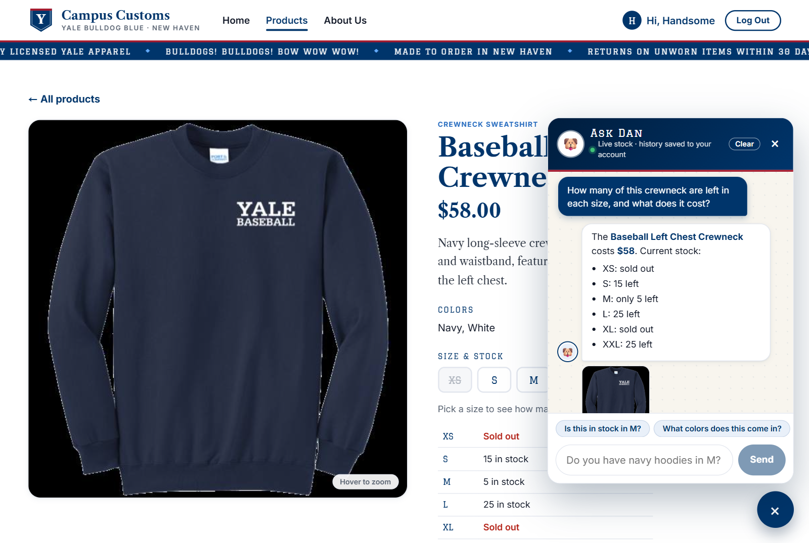
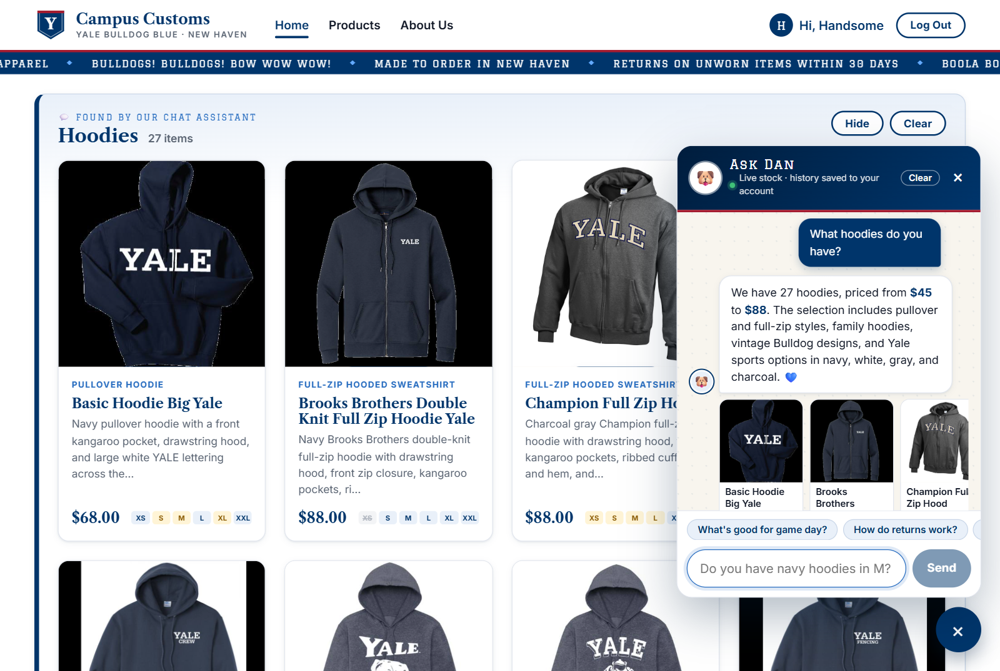
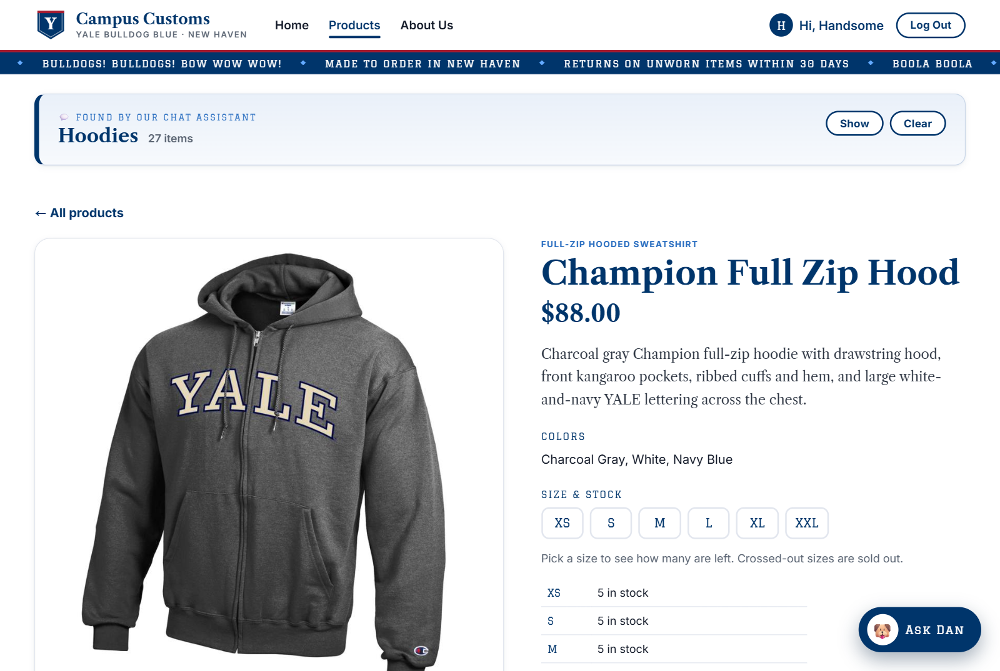
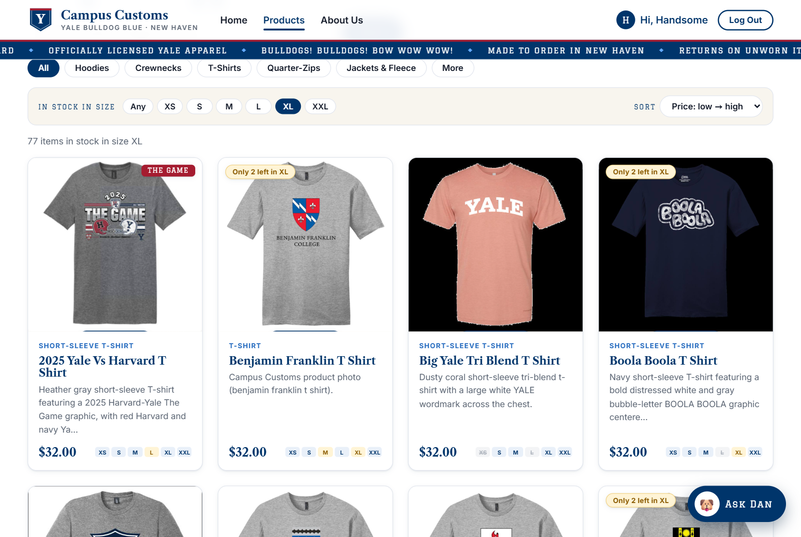
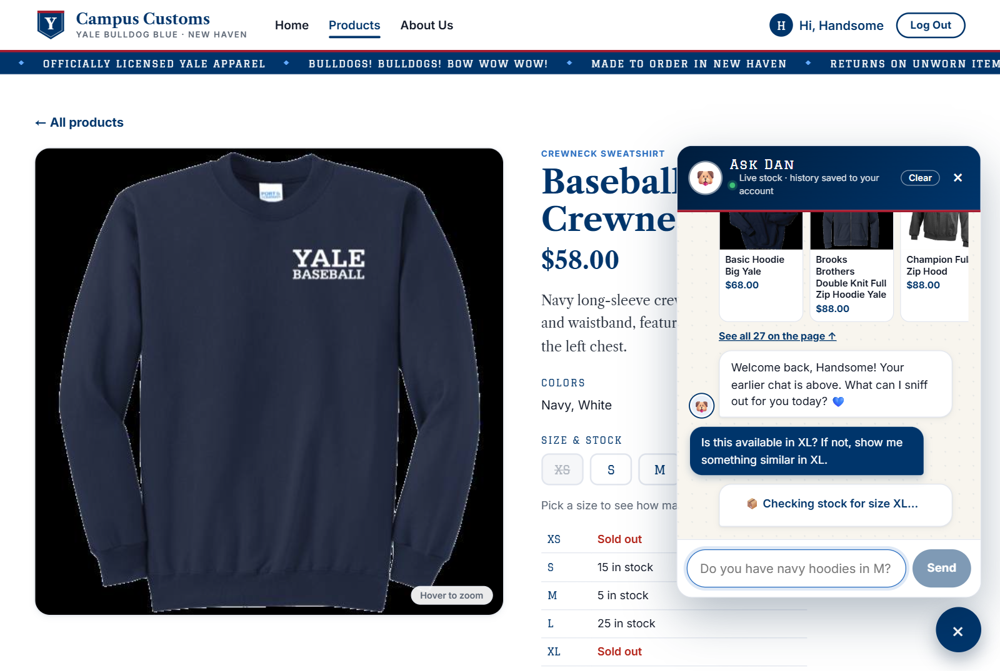
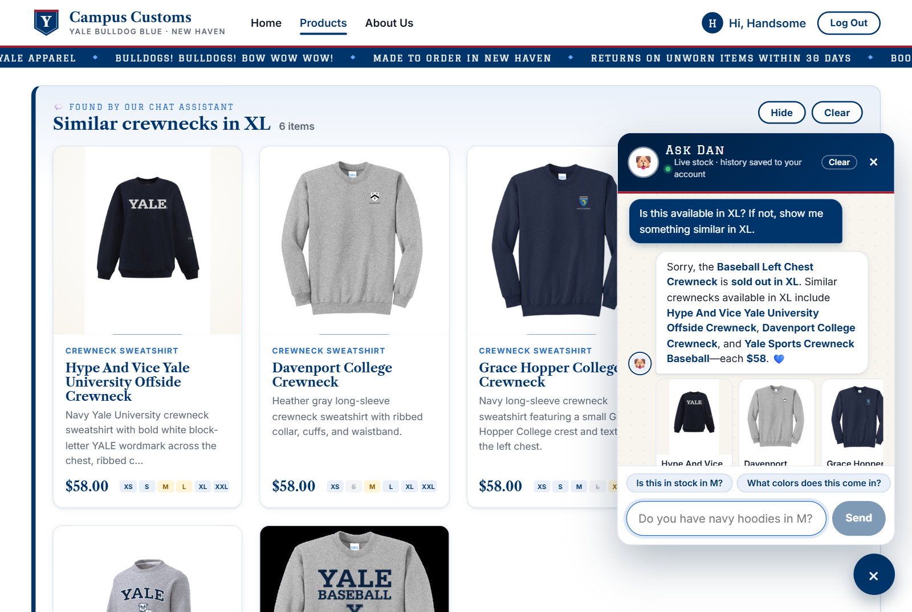

| # | Check | Result |
|---|---|---|
| 1 | Chat checks an item's inventory and price (honest numbers from the DB) | ✔ Pass: all 6 sizes and the price match the DB |
| 2 | Category question ("What hoodies do you have?") puts product cards on the page | ✔ Pass: 27 cards, and the DB has 27 hoodies |
| 2b | A card the chat placed still opens the single-item page | ✔ Pass |
| 3 | Problem 9 usability feature: "In stock in size" filter, sort, stock badges, size strip | ✔ Pass: 77 items in XL, and the DB has 77 |
| 3b | Problem 9 features: suggestion chips, live tool progress, and find_similar_products | ✔ Pass: all 6 suggestions are in stock in XL |
Check 1Chat checks the inventory level of an item

Database check:
SELECT price FROM catalogue … and SELECT size, quantity FROM inventory WHERE product_id='baseball-left-chest-crewneck'
| Price | XS | S | M | L | XL | XXL |
|---|---|---|---|---|---|---|
| $58.00 | 0 | 15 | 5 | 25 | 0 | 25 |
| Chat said: "$58 … XS: sold out, S: 15 left, M: only 5 left, L: 25 left, XL: sold out, XXL: 25 left" ✔ | ||||||
Check 2Dynamic search-result cards after a category question

Database check:
SELECT COUNT(*), MIN(price), MAX(price) FROM catalogue WHERE garment_type LIKE '%hood%' → 27 items, $45–$88. The page showed 27 cards ✔
2b. A chat-placed card still opens the single-item page

/products/champion-full-zip-hood, the same detail view from
Problem 3, with a large image, full description, price, colors, and stock by size.
The results panel folds to its header ("Show" / "Clear"), so the shopper can go back
to the list.
Check 3Usability feature from Problem 9: "In stock in size" filter, sort, and stock badges

Database check:
SELECT COUNT(*) FROM inventory WHERE size='XL' AND quantity>0 → 77 ✔ · The page's prices were checked to be in ascending order ✔
3b. Also from Problem 9: suggestion chips, live tool progress, and similar in-stock items


find_similar_products tool filled the page with "Similar crewnecks in XL · 6 items", so a dead end becomes a sale.
Database check: XL stock for each suggested item, all in stock and all $58 as the chat said ✔
| Suggested item | XL qty | Price |
|---|---|---|
| hype-and-vice-yale-university-offside-crewneck | 20 | $58 |
| davenport-college-crewneck | 20 | $58 |
| grace-hopper-college-crewneck | 2 | $58 |
| saybrook-college-crewneck | 15 | $58 |
| super-heavyweight-crewneck-arched-yale-crest | 25 | $58 |
| yale-sports-crewneck-baseball | 12 | $58 |